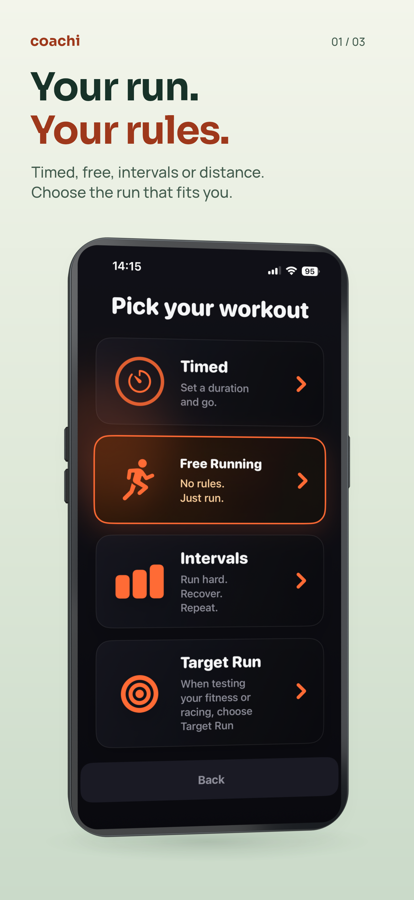
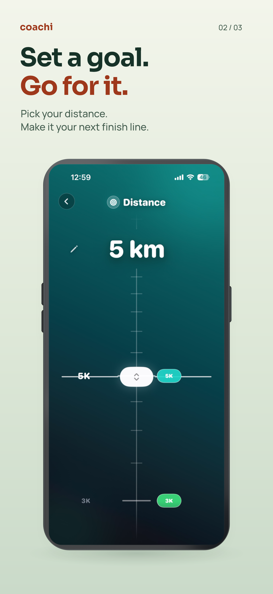
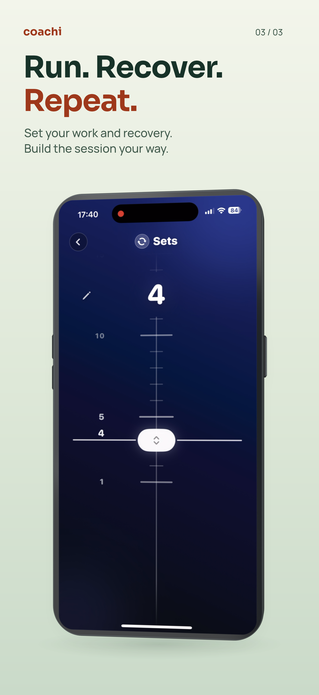

Coachi · Product presentation
Your run comes first.
Shorter headlines. Clearer benefits. Genuine Coachi screens.



One image. One reason to keep looking.
Sora headlines and Manrope supporting text now share one consistent scale. The benefit comes before the phone, with deliberate line breaks and more breathing room. Each image makes sense on its own.
Local review · Not uploaded
These are unbranded 3D design mockups, not native device screenshots or upload-cleared Apple artwork. The flat Store exports remain unchanged.
Source and render recordWatch design located
The approved August 26 Watch HTML exists and is linked in the source record. Native capture is still blocked by simulator startup failures; no old Watch image has been substituted.
Watch HTML / capture status